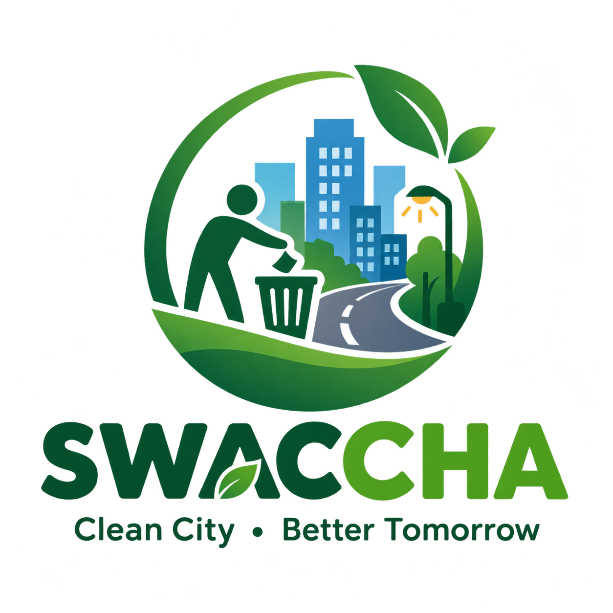

Report garbage, road damage, street-light problems and other civic issues directly to the responsible authority.
Report waste and garbage in public places.
Report potholes and damaged roads.
Report damaged or non-working street lights.
Report water leakage and public water problems.
Take a photo of the problem.
GPS identifies the location.
The complaint is sent to the responsible department.
Track the complaint until resolution.